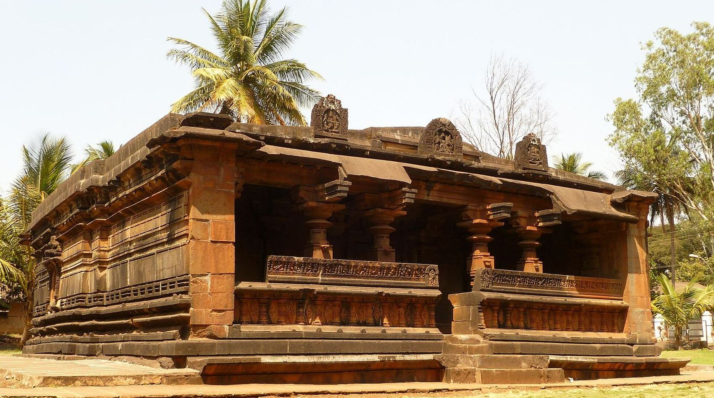
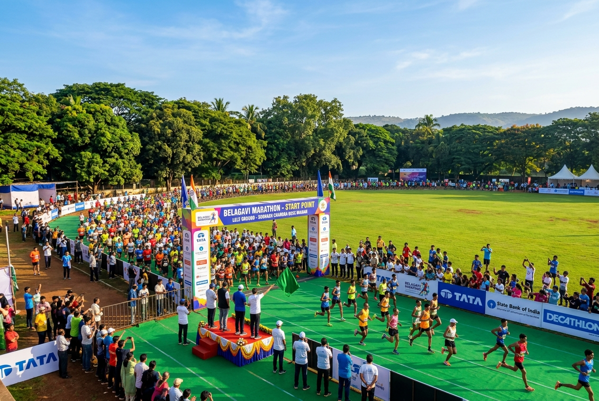
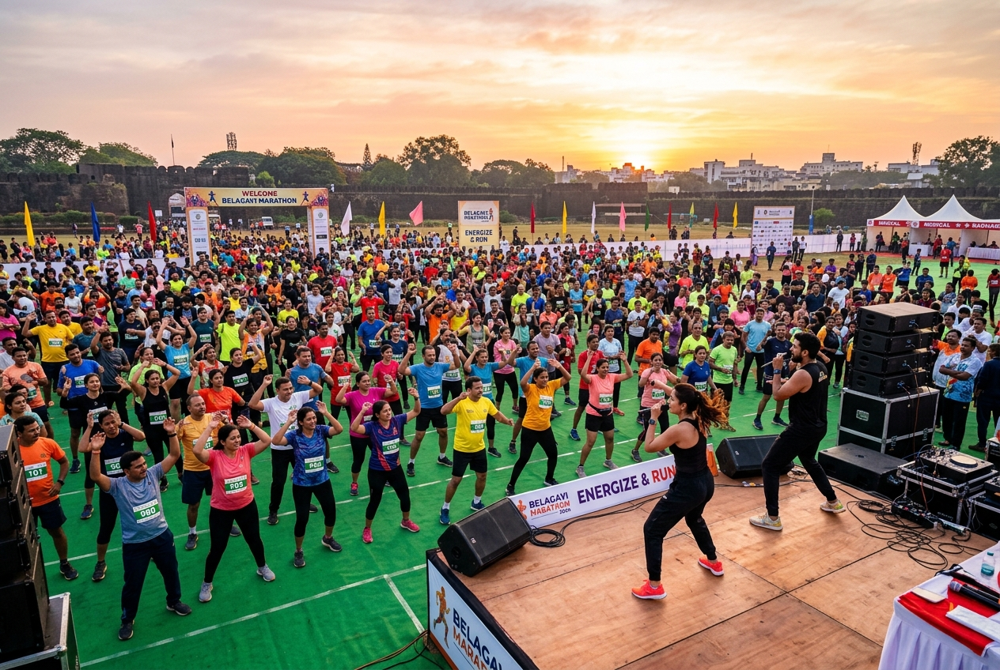
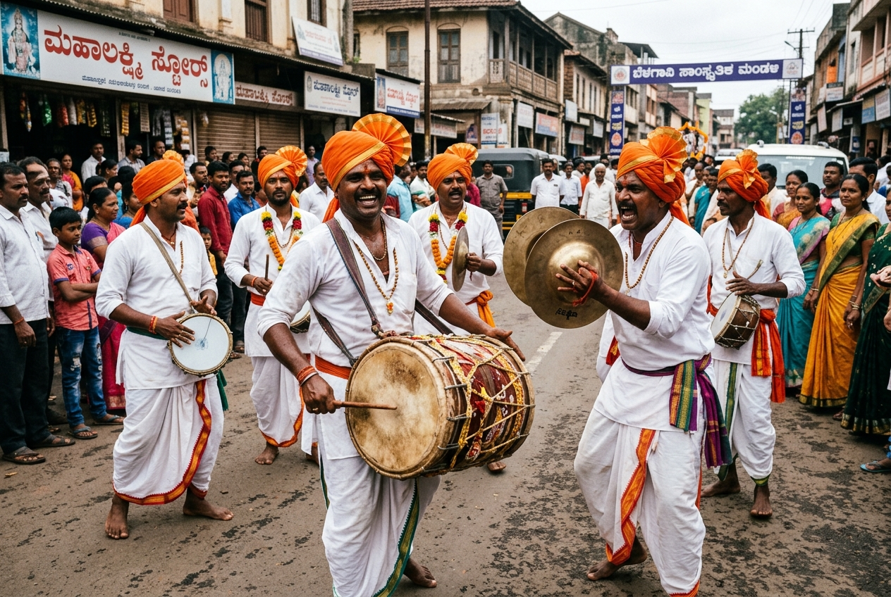
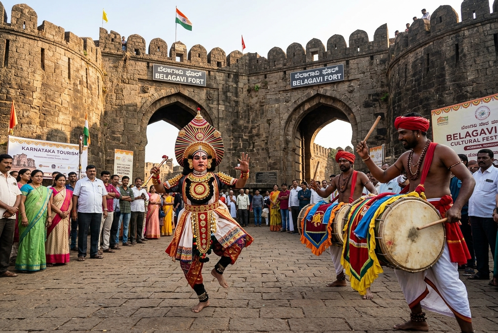
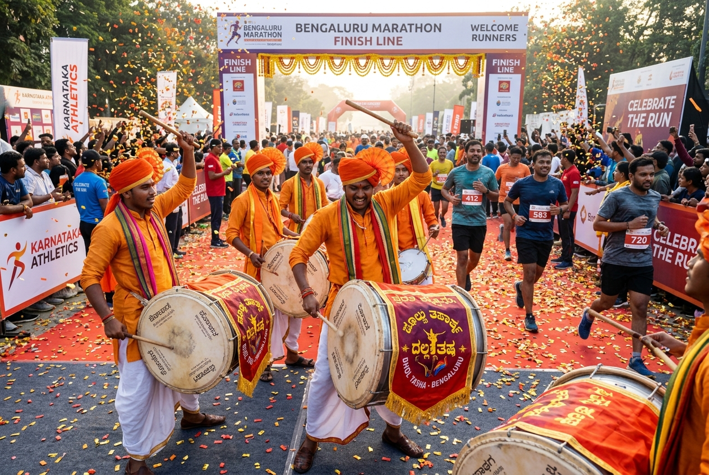

World Tourism Day · Sunday, 27 September 2026
An 8-kilometre heritage marathon carrying 500 runners past 13th-century forts, sacred basadis, and anti-colonial landmarks — culminating in the formal inauguration of the district's AI-rebuilt Tourism Portal.
The Proposition · Executive Summary
Turning Belagavi's living heritage into an active guided tour at pace, paired with a permanent digital transformation for district tourism.
The 8 km Route · Interactive Map & Cultural Positions
Hover or click any landmark pin on the vector map outline to inspect on-route tourist monuments, historical significance, and live performance details — or switch to the official Google Map route.

START · 0.0 km Assembly HubSubhash Chandra Ground · Camp Area
Historic public sports ground and major assembly venue in Belagavi. Serves as the central hub for 500 runners, mass warm-up, bib collection, and dignitary flag-off at 06:30 hrs.
Cultural Corridor · Exact Route Positions
Rather than generic entertainment points, troupes are placed at the tourist sites the route crosses — turning the run into a continuous corridor of Karnataka folk traditions.

km 0.0 · StartMass energetic warm-up for all 500 runners and spectators led from the stage, transitioning directly into the 06:30 dignitary flag-off.

km 3.0Traditional North Karnataka folk percussion ensemble with bronze cymbals lifting runner pace as the pack crosses the 3 km mark.

km 5.0Signature cultural highlight staged against the 13th-century ramparts — the highest photo, media, and spectator cheering spot.

km 8.0 · FinishHigh-energy finish arch reception with grand drums welcoming every finisher directly into the auditorium for refreshments and function.
Race Morning Schedule
Morning timeline from assembly through race finish, refreshments, and transition to the formal auditorium function.
Auditorium Proceedings · Complete Order
A unified grand session combining state protocol, the AI website inauguration, cultural performances by hotel management students, awards, and felicitation.
Answering the Global Theme
The World Tourism Day theme is not just decoration. Belagavi's entire district tourism website is being completely rebuilt and enhanced with AI capabilities, inaugurated on event day.
Interactive planning tool that customises Belagavi heritage trails based on visitor duration, interest (history, waterfalls, spiritual, cuisine), and real-time travel logistics.
A multi-lingual conversational AI guide in Kannada, Marathi, and English providing instant historical context, audio commentary, and navigational guidance at every monument.
High-resolution drone mapping, 3D monument walkthroughs of Belagavi Fort, Kamal Basti, and surrounding district treasures preserving Belagavi’s legacy online.
District Competitions
Engaging youth and artists across Belagavi district before the event, with awards presented live on stage at the main function.
Theme: "Belagavi Unseen Heritage". High-resolution entries judged across student and open categories.
Closes 22 Sep · Pre-judged
Theme: "Digital Innovation in Karnataka Tourism" in Kannada, English, and Marathi.
Closes 22 Sep · Pre-judged
School and college students depicting Rani Chennamma, Belagavi Fort, and cultural icons.
Closes 22 Sep · Pre-judged
Men, Women, and Veteran podium finishers, plus recognition medals for all 500 finishers.
Event Day · 27 Sep
Mobilization Strategy
A multi-channel institutional, school, and digital sprint to pack the start line and maximize community participation.
Execution Timeline
Days between today's presentation and race morning. Every milestone is tightly sequenced to guarantee seamless execution.
Operations · Safety · Athlete Experience
Professional race management ensuring safety, hydration, medical support, medals of recognition, and fresh refreshments.
Participant Logistics & Hospitality
Safety, Medical & Traffic